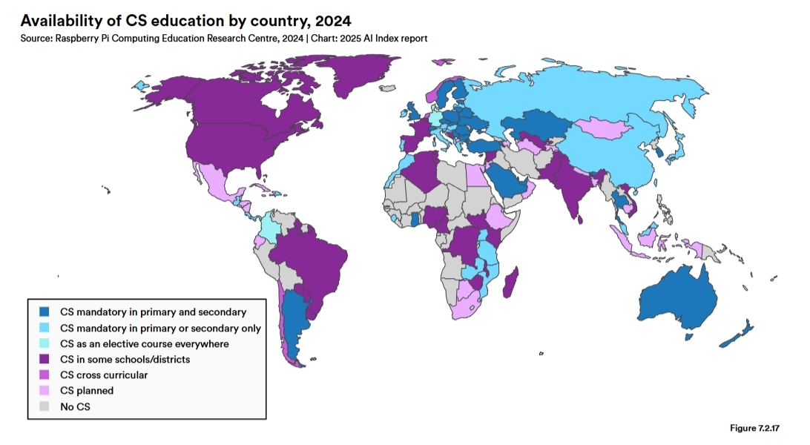
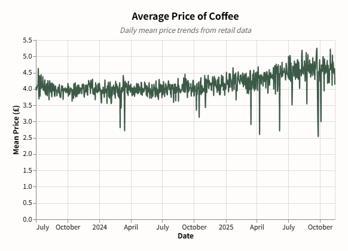
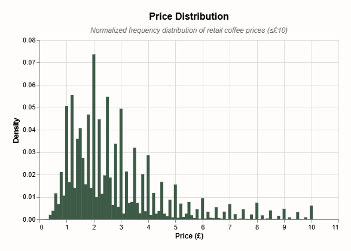
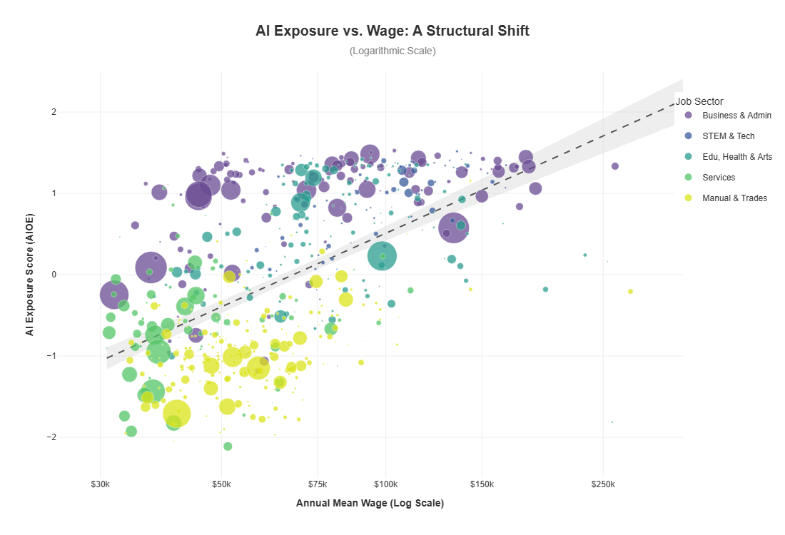

10 Coding Challenges (CC) covering full-stack data skills
This section documents my technical learning process throughout the semester, presenting weekly progress across ten Coding Challenges. The projects illustrate my gradual development across the data pipeline—from foundational exercises such as chart replication and hosting, to more complex tasks involving automated data scraping, API integration, interactive geospatial mapping, and exploratory machine learning analysis.
Set up a GitHub repository and live site. Embed two charts using the vegaEmbed function to demonstrate hosting capabilities.
Create two separate charts using the Economics Observatory Data Hub "create" tool and embed them into the portfolio.
Policy topic:
Governments should mandate stricter age-verification for social media and smartphone access to protect the cognitive development and mental well-being of minors.
Data indicates that delaying smartphone ownership until age 13 or later correlates with lower reported incidents of suicidal thoughts, aggression, and physical health issues.
Teens report that social media predominantly hurts their sleep and productivity, with negative impacts on mental health significantly outweighing the perceived benefits.
Replicate a chart from Artificial Intelligence Index Report 2025 by Stanford University, then create an improved version.

Sequential coloring clarifies the logical hierarchy obscured by the original palette, while white strokes reduce noise, making data relationships significantly more intuitive to interpret.
Implement one chart using live data from an API and another using data scraped from a website via Python (Google Colab).
The chart retrieves employment data via the World Bank Indicators API, using a RESTful structure based on the URL https://api.worldbank.org/v2/.
To execute a data call, specific path segments are appended to define the scope: /country/ followed by ISO-3 codes (e.g., usa;ind for the U.S. and India) and /indicator/ followed by the metric ID (SL.EMP.TOTL.SP.ZS for employment to population ratio). The request is further refined with query parameters: format=json for machine-readable data, date=2000:2025 to set the temporal range, and per_page=160 to capture all data points in one response.
Full Final URL:
https://api.worldbank.org/v2/country/usa;ind/indicator/SL.EMP.TOTL.SP.ZS?format=json&date=2000:2025&per_page=160
Scraped Wales GVA data. Navigating complex HTML tags to pinpoint target data was challenging, requiring precise cell isolation before converting into a tidy long-format CSV.
View code at: Google Colab
Build a mini-dashboard of six time-series charts using a loop to batch download data and JavaScript loops for embedding.
The six charts above are dynamically generated and embedded using a JavaScript loop.
View code at: Google Colab
Produce two maps (Scotland and Wales): one displaying coordinate points and the other a choropleth map showing regional data.
Extract a story from millions of price records (LRPD or AutoCPI datasets) and produce two charts simplifying this high-volume data.


These CC8 visuals are built with Altair.
View code at: Google Colab
Create two charts featuring advanced interactivity (e.g., sliders, dropdowns, clickable legends) beyond basic tooltips.
Interactive scatter plot with dropdown selector to toggle between different AI exposure metrics (Text Generation, Image Generation, Combined). Click to switch views and observe how industry structural change correlates with different AI capabilities.
Click on legend items to highlight specific groups, isolating separation rate trends by AI exposure level and age cohort. The vertical dashed line marks ChatGPT's release, enabling comparison of pre- and post-launch labor dynamics.
Conduct advanced analysis or machine learning (supervised/unsupervised) using Python/sklearn and visualize the results.

Hypothesis
Higher annual mean wages are positively correlated with higher AI Exposure Scores (AIOE) across various job sectors, suggesting a structural link between pay and automation risk.
Comment
The analysis reveals a positive correlation: higher-wage sectors like STEM and Business show significantly greater AI exposure compared to lower-wage Manual and Service jobs.
View code at: Google Colab